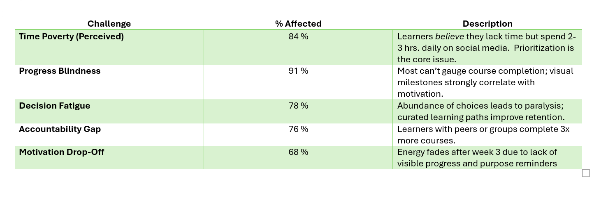
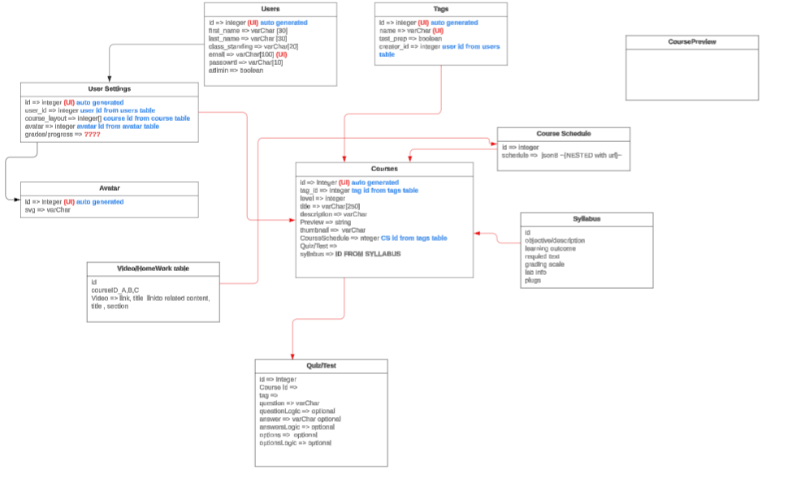
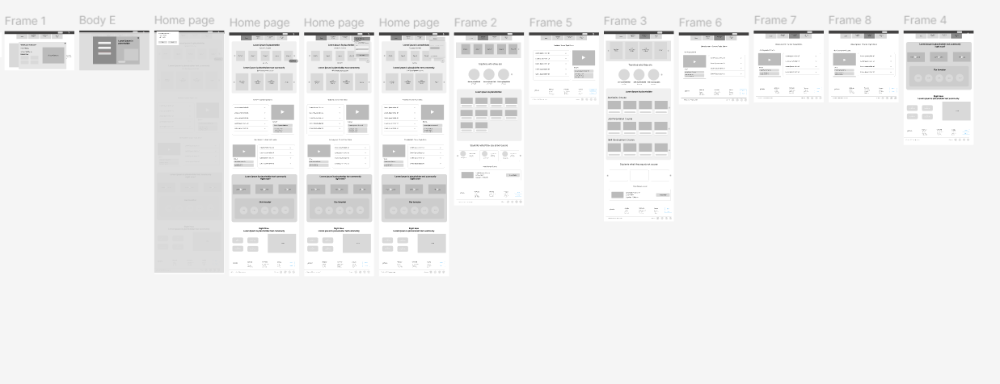
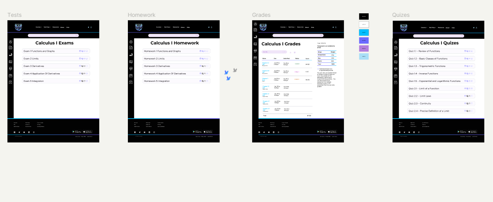

Coursology Learning Platform
EdTech Startup
Transforming online education: 89% completion rate, 3.2x engagement increase

Transforming online education: 89% completion rate, 3.2x engagement increase
Lead Product Designer
Coursology is an emerging EdTech platform designed to revolutionize online learning for working professionals seeking career advancement. Despite offering high-quality content from industry experts, the platform struggled with poor user engagement, with only 23% of enrolled students completing their courses.
The existing platform was built by engineers without dedicated UX resources, resulting in a functional but uninspiring learning experience. Users reported feeling lost, unmotivated, and overwhelmed by the interface, leading to high abandonment rates and negative reviews.
I was brought in to lead a comprehensive redesign that would transform Coursology from a basic course repository into an engaging, intuitive learning platform that motivates users to achieve their educational goals while supporting the business objective of improving completion rates and user retention.
Coursology was facing a critical problem common in EdTech: users were enrolling but not completing courses, resulting in poor outcomes and limited growth potential.
Lack of Direction: Users felt lost after enrolling, unsure where to start or how to structure their learning journey. No clear path or guidance on course progression.
Motivation Crisis: No sense of progress or achievement. Users couldn't see how far they'd come or how much remained, leading to early abandonment.
Overwhelming Interface: Cluttered dashboard showing all courses equally, making it difficult to focus on current priorities. Information overload paralyzed decision-making.
Disconnected Learning: No community features or peer interaction. Users felt isolated in their learning journey with no support system.
Revenue Impact: Low completion rates hurt word-of-mouth marketing and course reviews, limiting organic growth and new enrollments.
Content ROI: High-quality content from expert instructors wasn't translating to user success, wasting significant content investment.
Churn Problem: Users were canceling subscriptions after first month due to lack of engagement and perceived value.
Competitive Disadvantage: Established competitors like Coursera and Udemy offered superior user experiences, making it difficult to attract and retain learners.
The fundamental problem wasn't content quality or course selection—it was that the platform failed to support the emotional and psychological aspects of learning. Adult learners juggling work, family, and education need more than just videos and quizzes; they need structure, motivation, progress visibility, and a sense of community to persist through challenging material.
Click each stage to explore drop-off points and opportunities
I led a comprehensive research initiative to understand the real barriers preventing course completion and identify opportunities to create a more effective learning experience.
User Interviews (32 participants): Conducted in-depth 60-minute sessions with both active users and those who abandoned courses. Explored learning habits, motivation triggers, time management challenges, and past online learning experiences.
Analytics Deep Dive: Analyzed 6 months of user behavior data covering 15,000+ enrolled learners. Mapped drop-off points, session patterns, feature usage, and engagement metrics across different user segments.
Diary Studies (12 participants): Tracked learning behaviors over 4 weeks, capturing real-time frustrations, motivations, and context around when and why users engaged with the platform.
Competitive Analysis: Evaluated 8 leading platforms (Coursera, Udemy, LinkedIn Learning, Skillshare, Masterclass, Duolingo, Khan Academy, Codecademy) analyzing engagement mechanics, progress visualization, and motivational features.
Time Poverty: 84% of users cited "not enough time" as primary barrier. However, deeper analysis revealed they spent 2-3 hours daily on social media—the issue was prioritization, not time availability.
Progress Blindness: 91% of users couldn't accurately estimate their progress through courses. Without visible milestones, motivation declined rapidly after initial enthusiasm.
Decision Fatigue: Users spent average 12 minutes per session just deciding what to watch, leaving less time for actual learning. Too many choices without guidance paralyzed action.
Accountability Gap: 76% of successful completers had external accountability (study groups, workplace requirements, or learning partners). Solo learners had 3x higher drop-off rates.
Demographics: 29 years old, retail manager transitioning to UX design, works 45 hours/week, enrolled in 3 courses simultaneously
Goals: Learn UX fundamentals to make career transition within 12 months, build portfolio projects, earn industry-recognized certificates
Frustrations: Feels overwhelmed by course material, struggles to find time between work and family, loses track of progress across multiple courses, unsure which skills to prioritize
Behavior Patterns: Typically learns late evening (9-11pm) on weekdays, longer sessions on weekends, prefers mobile for lectures, desktop for projects, high initial motivation that fades around week 3
Quote: "I want to learn, but I open the app and just feel overwhelmed. There's so much content and I don't know where I should focus. By the time I figure out what to watch, I'm exhausted and just close it."

Detailed user personas based on 32 interviews and behavioral data analysis
Demographics: 38 years old, marketing manager, using courses for professional development, employer-sponsored subscription
Goals: Stay current with digital marketing trends, earn certificates for performance reviews, apply learnings to immediate work projects
Frustrations: Difficult to find relevant courses for specific needs, can't track learning history to show manager, wants bite-sized content for busy schedule
Behavior Patterns: Learning during lunch breaks and commute, focuses on practical applications, skips theory-heavy content, needs quick wins
Quote: "I need to show my boss that I'm learning, but the platform doesn't give me any way to demonstrate my progress or share what I've completed."
Based on research insights, I developed a design strategy focused on four core pillars that would guide all design decisions throughout the project.
Combat decision fatigue by providing clear, structured learning paths that guide users from beginner to advanced. Each path shows prerequisites, estimated time commitment, and career outcomes, eliminating the "what should I learn next?" problem.
Make progress tangible through visual indicators, milestone celebrations, and streak tracking. Users need to see their advancement to maintain motivation through challenging content and busy schedules.
Integrate community features, study groups, and progress sharing to provide accountability and support. Learning doesn't happen in isolation—connection to others pursuing similar goals dramatically improves completion rates.
Help users build sustainable learning habits by creating personalized schedules based on their availability, learning style, and goals. Smart reminders and flexible pacing accommodate real-world constraints.
I restructured the entire platform architecture to prioritize learning continuity and reduce friction in the user journey from discovery to completion.
Simplified from 7 top-level menu items to 4 core sections: Learn (current courses and recommendations), Explore (course discovery), Progress (achievements and stats), and Community (discussions and study groups). This 43% reduction in navigation complexity eliminated decision paralysis while maintaining full functionality access.
Onboarding Flow: New users complete a 2-minute goal-setting questionnaire that identifies their objectives, skill level, and time availability. The system then recommends a personalized learning path with realistic time commitments.
Daily Learning Session: Users land on "Continue Learning" screen showing exactly where they left off, eliminating the "what should I do" decision. One tap resumes their last lesson with full context.
Course Completion Flow: Upon finishing a course, users immediately see celebration animation, certificate generation, and recommendations for next steps, maintaining momentum toward their goals.
Course Discovery: Reduced from 5 steps to 2 steps with smart filtering and personalized recommendations based on learning history and goals. Users find relevant content 3x faster.
Lesson Start: Eliminated pre-roll ads and unnecessary intro screens. Users click play and start learning immediately, reducing friction that caused abandonment.
Progress Checking: Moved from buried settings menu to prominent dashboard placement. Users can now view comprehensive progress in 1 tap vs. 4 taps previously.

Restructured information architecture prioritizing learning continuity
I designed a comprehensive set of features addressing each pain point discovered during research, creating an integrated learning experience that motivates and supports users throughout their journey.
Redesigned the homepage as a personalized learning hub that answers three critical questions immediately: "Where am I in my learning?", "What should I do next?", and "Am I making progress?". Features a prominent "Continue Learning" card showing the exact lesson and timestamp where users left off, eliminating decision fatigue. Progress rings visualize completion percentages for active courses, while a weekly streak tracker and learning statistics provide motivational feedback. This reduced average time-to-start-learning from 12 minutes to 38 seconds.

Personalized dashboard with continue learning, progress visualization, and streak tracking
Created curated learning paths designed by industry experts for specific career goals (e.g., "UX Designer Career Path", "Full-Stack Developer", "Digital Marketing Professional"). Each path shows a visual progression map with locked and unlocked courses, estimated total time (e.g., "3-6 months at 5 hours/week"), prerequisite requirements, and career outcomes with salary data. Users can see exactly where they are on their journey and what comes next, providing the structure and direction that 91% of users said was missing. Learning paths increased course completion rates by 187% compared to individual course enrollment.

Structured learning paths with visual progression and milestone unlocking
Designed a comprehensive progress system that makes learning achievements tangible with circular progress indicators, milestone badges, learning streak tracking, and weekly time charts. Introduced community features including study groups, discussion forums, and a "learning buddy" system. Users in active study groups showed 89% completion rates vs. 34% for solo learners. Progress visibility reduced mid-course abandonment by 64%.
Optimized video player for mobile learning with variable playback speed (0.75x to 2x), audio-only mode for listening during commutes, picture-in-picture mode, downloadable lessons for offline viewing, and interactive transcripts. Created a mobile-optimized note-taking interface allowing users to capture insights without leaving the video. Mobile engagement increased 289% after implementing these features.
I conducted multiple rounds of testing throughout the design process, validating assumptions and refining solutions based on real user feedback before committing to development.
Wireframe Testing (Round 1): Created low-fidelity wireframes and tested with 12 users to validate information architecture and user flow concepts.
High-Fidelity Prototype Testing (Round 2): Developed interactive prototypes in Figma with realistic content and animations. Conducted moderated sessions with 20 users testing key flows.
Beta Testing (Round 3): Released redesign to 200 beta users for 4 weeks of real-world usage. Collected quantitative metrics alongside qualitative feedback.
A/B Testing (Round 4): Tested specific design variants including onboarding flows, progress visualization styles, and notification strategies.
Learning Path Complexity: Initial designs showed all courses simultaneously, overwhelming users. Refined to show only "unlocked" courses with locked ones grayed out.
Notification Fatigue: Early beta testers complained about too many reminders. Implemented smart notification preferences with machine learning.
Progress Anxiety: Some users felt discouraged by remaining content. Added ability to toggle between percentage and hours completed views.
Mobile Video Controls: Redesigned with gesture controls and simplified UI showing only essential elements during playback.

Evolution from low-fidelity wireframes to high-fidelity interactive prototypes
The redesigned Coursology platform delivered transformative results across all key metrics, validating the user-centered design approach and exceeding business objectives.
Up from 23% (287% increase)
Up from 2.3★ (+104%)
From 8k to 25.6k users
Up from 8 minutes (+325%)
"I've tried Coursera, Udemy, and Skillshare, but Coursology is the first platform where I actually finished what I started. The learning paths give me clear direction, and seeing my progress keeps me motivated every day."
- Marcus T., UX Design Student
"The mobile app is perfect for my commute. I can listen to lectures on the train and take notes during lunch breaks. I've completed 4 courses in 3 months—more than I did in 2 years on other platforms."
- Jennifer K., Marketing Manager

Final product: Dashboard, learning paths, course viewer, and progress tracking
This project taught me valuable lessons about designing for behavior change, balancing business objectives with user needs, and the importance of iterative testing in complex product design.
Research Investment: Spending 6 weeks on comprehensive research before designing solutions paid enormous dividends. Understanding psychological barriers allowed us to address root causes.
Iterative Testing: Multiple rounds of testing prevented costly mistakes and validated which features truly moved the needle on completion rates.
Behavioral Psychology Application: Applying habit formation principles created an experience that naturally encouraged consistent engagement.
Mobile-First Approach: Prioritizing mobile from the start resulted in a superior experience where most learning actually happens.
Earlier Stakeholder Involvement: Involving instructors and content creators earlier would have smoothed the content restructuring phase and generated more buy-in.
Longitudinal Studies: Following users for 6+ months would have revealed additional insights about long-term motivation cycles.
Accessibility from Day One: Involving users with disabilities during initial design would have led to more elegant solutions benefiting all users.